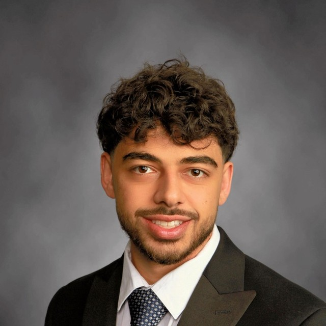

Zeeshan Rizvi
Third-year medical student
We are third-year medical students who created NutriGuide to make nutrition education easier to understand. Our goal is to help patients find clear, practical starting points for conversations about food and health.
Third-year medical student

Third-year medical student

Third-year medical student

Third-year medical student
Zeeshan is a third-year medical student with a bachelor’s degree in Exercise and Sports Science. His goal in medicine is to empower communities through accessible health education. He began with Rizvi Training, creating a training program for more than 60 clients in his local South Asian community and charging on a sliding scale.
He later offered free weight management education classes at an endocrinology clinic, helping patients manage obesity alongside other metabolic conditions. As a volunteer diabetes educator at a free clinic, he developed nutrition guidance for underserved patients navigating limited access to healthy food in their local food desert.
Zeeshan is drawn to osteopathic medicine for its emphasis on the body’s ability to heal. He helped create NutriGuide because he believes everyone deserves free, understandable health education to support their own wellbeing.
Caesar is a third-year medical student at Michigan State University College of Osteopathic Medicine. He earned a bachelor’s degree in Biomedical Sciences from Oakland University. Before medical school, he worked with patients managing diabetes and other metabolic conditions at an endocrinology clinic and supported the NIH All of Us Research Program at Henry Ford Hospital.
Caesar previously served as a clinical coordinator with Spartan Street Medicine, helping organize outreach and support care for people experiencing homelessness. As a counselor at an American Diabetes Association camp, he taught diabetes education to children and families. He has also participated in community health fairs offering free screenings and resources.
These experiences shaped his belief that health information should be clear, practical, and available to everyone. He helped create NutriGuide to make nutrition education easier for patients to understand and use in their daily lives.
Shuja Alnounou is a third-year medical student at Michigan State University College of Osteopathic Medicine, whose interest in health began while growing up in an underprivileged community overseas and in the Flint area, where he saw how differences in resources, education, and access could shape the health of those around him. His curiosity about these disparities led him to study Molecular Biology and Psychology at the University of Michigan–Flint, while seeking experiences that allowed him to understand health beyond the classroom.
Through volunteering in the hospital, working as an Emergency Medical Technician, participating in health research, and serving as an educator and community volunteer, Shuja encountered healthcare from multiple perspectives and developed a growing appreciation for both the science of medicine and the importance of making that knowledge accessible to others. These experiences ultimately led him to medical school, where caring for patients has further shaped his understanding of how health is influenced not only by disease, but by the circumstances in which people live.
Now, during his clinical medical training, Shuja continues to see how strongly nutrition, lifestyle, education, socioeconomic circumstances, and access to resources can influence chronic disease and long-term health. He has also recognized that even well-intentioned health recommendations can be difficult to follow when they do not account for a person’s culture, resources, environment, or everyday realities.
These experiences have inspired him to expand his focus toward nutrition and preventive health, particularly by helping bridge the gap between complex medical science and information people can realistically apply in their everyday lives. Through this platform, Shuja hopes to bring together his experiences in medicine, research, education, and community service to make evidence-based health information more understandable, practical, and accessible to the communities he serves.
NutriGuide is for educational purposes only and does not provide medical advice, diagnosis, or treatment. Nutrition needs vary by person and medical condition. Talk with your healthcare professional or registered dietitian before making changes to your care.